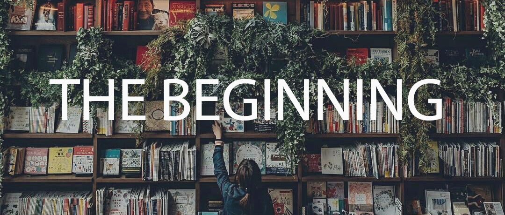

The Beginning

The first Books and Mortar opened on Wealthy Street in Grand Rapids' Eastown neighborhood in the early 1960's. It was a small, downtrodden, literary bookstore with creaky floors and dust covering everythingyou could see. We had a mechanical cash register, pen and paper, and a staff that knew every book in the store by heart. The retail book industry has changed dramatically over the decades, but we discovered that Books and Mortar could coexist with the huge national chains and thrive by finding unique locations and creating personal, full-service stores where you don't expect to find them.